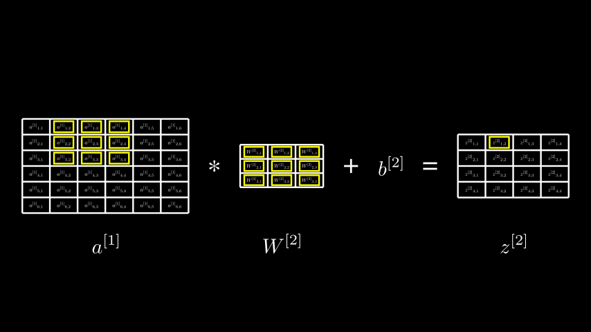

def convolve(X: np.ndarray, filter: np.ndarray, zero_pad_width: int, stride: int):
X_pad = np.pad(
X,
((zero_pad_width, zero_pad_width), (zero_pad_width, zero_pad_width)),
mode='constant',
constant_values=(0.0, 0.0),
)
in_H, in_W = X.shape
f, f = filter.shape
out_H = int((in_H + (2 * zero_pad_width) - f) / stride) + 1
out_W = int((in_W + (2 * zero_pad_width) - f) / stride) + 1
output = np.zeros((out_H, out_W), dtype=X.dtype)
for out_row in range(out_H):
for out_col in range(out_W):
in_start_row = out_row * stride
in_start_col = out_col * stride
output[out_row][out_col] = sum(
(
X_pad[in_row][in_col] * filter[i][j]
for i, in_row in enumerate(range(in_start_row, in_start_row + f))
for j, in_col in enumerate(range(in_start_col, in_start_col + f))
)
)
return outputConvolution with Symbols
Convolution Algorithm
Below is the convolution* function I implemented for my CNN course. It’s probably not the most efficient implementation, but writing it was a good learning exercise.
*I’m aware that, mathematically speaking, what I’m implementing here is actually cross-correlation rather than convolution. But this is what deep-learning practitioners call convolution, so I’m going with it. This article offers a good description of the differences. tl;dr: in true mathematical convolution, you’re supposed to flip the kernel 180° before applying it.
We can test it with some sample data.
X_test = np.array(
[
[1.0, 2.0, 3.0, 4.0,],
[1.0, 2.0, 3.0, 4.0,],
[1.0, 2.0, 3.0, 4.0,],
[1.0, 2.0, 3.0, 4.0,],
]
)
f_test = np.array(
[
[0.0, 1.0,],
[1.0, 0.0,],
]
)
expected = np.array(
[
[3.0, 5.0, 7.0],
[3.0, 5.0, 7.0],
[3.0, 5.0, 7.0]
]
)
test_eq(convolve(X_test, f_test, 0, 1), expected)# Test output of our convolve function is consistent with scipy
test_eq(
convolve(X_test, f_test, 0, 1), # ours
convolve2d(X_test, f_test, mode='valid') # scipy
)Convolution with Symbols
It turns out, the same convolution code works just as well when the contents of the input arrays are symbols instead of numbers. We can use the symbolic expression library, SymPy, to represent symbols.
X_test = np.array([
[Symbol(r'x_{11}'), Symbol(r'x_{12}'), Symbol(r'x_{13}'), Symbol(r'x_{14}'),],
[Symbol(r'x_{21}'), Symbol(r'x_{22}'), Symbol(r'x_{23}'), Symbol(r'x_{24}'),],
[Symbol(r'x_{31}'), Symbol(r'x_{32}'), Symbol(r'x_{33}'), Symbol(r'x_{34}'),],
[Symbol(r'x_{41}'), Symbol(r'x_{42}'), Symbol(r'x_{43}'), Symbol(r'x_{44}'),],
])
f_test = np.array([
[Symbol(r'w_{11}'), Symbol(r'w_{12}'),],
[Symbol(r'w_{21}'), Symbol(r'w_{22}')],
])
result = convolve(X_test, f_test, 0, 1)
resultarray([[w_{11}*x_{11} + w_{12}*x_{12} + w_{21}*x_{21} + w_{22}*x_{22},
w_{11}*x_{12} + w_{12}*x_{13} + w_{21}*x_{22} + w_{22}*x_{23},
w_{11}*x_{13} + w_{12}*x_{14} + w_{21}*x_{23} + w_{22}*x_{24}],
[w_{11}*x_{21} + w_{12}*x_{22} + w_{21}*x_{31} + w_{22}*x_{32},
w_{11}*x_{22} + w_{12}*x_{23} + w_{21}*x_{32} + w_{22}*x_{33},
w_{11}*x_{23} + w_{12}*x_{24} + w_{21}*x_{33} + w_{22}*x_{34}],
[w_{11}*x_{31} + w_{12}*x_{32} + w_{21}*x_{41} + w_{22}*x_{42},
w_{11}*x_{32} + w_{12}*x_{33} + w_{21}*x_{42} + w_{22}*x_{43},
w_{11}*x_{33} + w_{12}*x_{34} + w_{21}*x_{43} + w_{22}*x_{44}]],
dtype=object)Each element of the output array is an expression in terms of the input symbols that defines how that element is calculated. We can pretty-print the first-one to see it better:
result[0][0]\(\displaystyle w_{11} x_{11} + w_{12} x_{12} + w_{21} x_{21} + w_{22} x_{22}\)
This is exactly the expression for the first element of the convolution output. If you overlaid the filter on the top-left corner of the input matrix and then multipled elements and summed the products, this is the expression you’d get. By running the convolution function against symbols, we’ve been able to get the expressions that represent the convolution output.
Before continuing, I want to make one improvement to the way we’re creating the matrices of symbols. In the code above, I created each Symbol in the matrices manually. Obviously, a couple of nested for-loops would accomplish this with less typing.
But beyond that, notice that each symbol name contains its row and column index. SymPy actually has support for the concept of an Indexed Object that makes it a little easier to extract the indices later when doing reflection. So I created a helper function that creates arrays of indexed symbols:
def ndarray_of_indexed_base(
ib: IndexedBase, shape: Tuple[int, int], transform=lambda x: x
) -> np.ndarray:
rows, cols = shape
data = [
[transform(ib[i, j]) for j in range(1, cols + 1)] for i in range(1, rows + 1)
]
return np.array(data, dtype=object)With this helper, I can create the equivalent of the X_test matrix above with just one line:
X_test = ndarray_of_indexed_base(IndexedBase('x'), (4, 4))
X_testarray([[x[1, 1], x[1, 2], x[1, 3], x[1, 4]],
[x[2, 1], x[2, 2], x[2, 3], x[2, 4]],
[x[3, 1], x[3, 2], x[3, 3], x[3, 4]],
[x[4, 1], x[4, 2], x[4, 3], x[4, 4]]], dtype=object)The representation looks a little different but it’s essentially still a matrix of symbols. Let’s create a little helper function to display matrices like this in a more readable format:
def matrix_to_markdown(matrix: np.ndarray) -> str:
h, w = matrix.shape
elements = (r'\\' + '\n').join([' & '.join([latex(matrix[i][j]) for j in range(w)]) for i in range(h)])
markdown = '$$' r'\begin{bmatrix}' + '\n'+ elements + r'\end{bmatrix}' + '\n' '$$'
return markdownMarkdown(matrix_to_markdown(X_test))\[\begin{bmatrix} {x}_{1,1} & {x}_{1,2} & {x}_{1,3} & {x}_{1,4}\\ {x}_{2,1} & {x}_{2,2} & {x}_{2,3} & {x}_{2,4}\\ {x}_{3,1} & {x}_{3,2} & {x}_{3,3} & {x}_{3,4}\\ {x}_{4,1} & {x}_{4,2} & {x}_{4,3} & {x}_{4,4}\end{bmatrix} \]
The reason we want to use Indexed Objects for our symbols is that it’s easier to extract the indices and the name of the “base” (the thing being indexed):
# Test accessing the indices (note that we use zero-based indices to access
# the array but the conceptual matrix indices are 1-based.)
test_eq(X_test[0][0].indices, (1, 1))
# Test getting the name of the base.
test_eq(X_test[0][0].base.name, 'x')The ability to easily pull out the base name and indices of a symbol will come in handy later when we analyze expressions.
Example from a Convolutional Neural Network
Let’s assume we’ve got a convolutional layer, somewhere in the middle of a CNN. To make things simple, I imagined the second layer of a CNN (\(\mathcal{l} = 2\)) and that I’d be dealing with: * the activations from the previous layer, \(a^{[1]}\) * the weights for the convolution kernel in the current layer, \(W^{[2]}\) * the bias for the current layer, \(b^{[2]}\) * the output from the convolution operation and adding the bias, \(z^{[2]}\)
For simplicity, I’m assuming \(a^{[1]}\) has just one channel, there’s just a single \(W^{[2]}\) filter, and we’re looking at just a single training example.
In the forward pass, \(z^{[2]}\) would go through an activation function to produce \(a^{[2]}\), which would then propagate through subsequent layers, and ultimately produce an output, \(\hat{y}\).
In fact, the forward pass calculation of \(z^{[2]}\) for our layer of interest can now be represented with the following few lines of code:
a1 = ndarray_of_indexed_base(IndexedBase(r'a^{[1]}'), (6, 6))
W2 = ndarray_of_indexed_base(IndexedBase(r'W^{[2]}'), (3, 3))
b2 = symbols(r'b^{[2]}')
z2 = convolve(a1, W2, 0, 1) + b2We can examine the elements of z2 to see that they represent the expressions we’d expect. E.g., the first element is:
z2[0][0]\(\displaystyle b^{[2]} + {W^{[2]}}_{1,1} {a^{[1]}}_{1,1} + {W^{[2]}}_{1,2} {a^{[1]}}_{1,2} + {W^{[2]}}_{1,3} {a^{[1]}}_{1,3} + {W^{[2]}}_{2,1} {a^{[1]}}_{2,1} + {W^{[2]}}_{2,2} {a^{[1]}}_{2,2} + {W^{[2]}}_{2,3} {a^{[1]}}_{2,3} + {W^{[2]}}_{3,1} {a^{[1]}}_{3,1} + {W^{[2]}}_{3,2} {a^{[1]}}_{3,2} + {W^{[2]}}_{3,3} {a^{[1]}}_{3,3}\)
This is exactly the sum of the weights multiplied by the corresponding elements in the left corner of the input matrix, plus the bias term. Similarly, the next element of z2 contains the expression for the next convolution output (notice the \(a^{[1]}\) column indices are shifted over by one):
z2[0][1]\(\displaystyle b^{[2]} + {W^{[2]}}_{1,1} {a^{[1]}}_{1,2} + {W^{[2]}}_{1,2} {a^{[1]}}_{1,3} + {W^{[2]}}_{1,3} {a^{[1]}}_{1,4} + {W^{[2]}}_{2,1} {a^{[1]}}_{2,2} + {W^{[2]}}_{2,2} {a^{[1]}}_{2,3} + {W^{[2]}}_{2,3} {a^{[1]}}_{2,4} + {W^{[2]}}_{3,1} {a^{[1]}}_{3,2} + {W^{[2]}}_{3,2} {a^{[1]}}_{3,3} + {W^{[2]}}_{3,3} {a^{[1]}}_{3,4}\)
If we wanted to visualize this expression, one way to do it would be to draw the three matrices, \(a^{[1]}\), \(W^{[2]}\), and \(z^{[2]}\), and highlight the elements of \(a^{[1]}\) and \(W^{[2]}\) that are multiplied together to produce a given element of \(z^{[2]}\). The code below uses Manim to render this visualization and highlights the cells corresponding to the above expression. Ignore most of the code - it’s just drawing boilerplate. In the cell below, I’ll highlight the parts of interest.
Code
class HardCodedHighlights(Scene):
def construct(self):
# Construct matrices and do the convolution
a1 = ndarray_of_indexed_base(IndexedBase(r'a^{[1]}'), (6, 6))
W2 = ndarray_of_indexed_base(IndexedBase(r'W^{[2]}'), (3, 3))
b2 = symbols(r'b^{[2]}')
z2 = convolve(a1, W2, 0, 1) + b2
# Turn latex() into a ufunc
latex_ufunc = np.frompyfunc(latex, 1, 1)
# a1 matrix
a1_view = MathTable(latex_ufunc(a1), include_outer_lines=True)
a1_view.width = 4
a1_h, a1_w = a1.shape
cell_height = a1_view.height / a1_h
cell_width = a1_view.width / a1_w
# conv symbol
conv_sym = Text('*')
# W2 matrix
W2_view = MathTable(latex_ufunc(W2), include_outer_lines=True)
W2_h, W2_w = W2.shape
W2_view.height = W2_h * cell_height
W2_view.width = W2_w * cell_width
# plus symbol
plus_sym = Text('+')
# bias text
b2_view = MathTex(r'b^{[2]}')
# equals symbol
eq_sym = Text('=')
# z2 matrix
z2_view = MathTable(
latex_ufunc(ndarray_of_indexed_base(IndexedBase(r'z^{[2]}'), z2.shape)),
include_outer_lines=True,
)
z2_h, z2_w = z2.shape
z2_view.height = z2_h * cell_height
z2_view.width = z2_w * cell_width
items = [a1_view, conv_sym, W2_view, plus_sym, b2_view, eq_sym, z2_view]
g = Group(*items).arrange_in_grid(rows=1, cols=len(items), buff=0.5)
self.add(g)
# Labels
a1_label = MathTex(r'a^{[1]}')
a1_label.next_to(a1_view, direction=DOWN, buff=0.5)
self.add(a1_label)
W2_label = MathTex(r'W^{[2]}')
W2_label.next_to(W2_view, direction=DOWN)
W2_label.align_to(a1_label, DOWN)
self.add(W2_label)
z2_label = MathTex(r'z^{[2]}')
z2_label.next_to(z2_view, direction=DOWN)
z2_label.align_to(a1_label, DOWN)
self.add(z2_label)
# Map ndarrays to views
array_to_view_map = {
r'a^{[1]}': a1_view,
r'W^{[2]}': W2_view,
r'z^{[2]}': z2_view,
}
# Map of cells to highlight
highlights_map = {
r'W^{[2]}': [(1, 1), (1, 2), (1, 3), (2, 1), (2, 2), (2, 3), (3, 1), (3, 2), (3, 3)],
r'a^{[1]}': [(1, 2), (1, 3), (1, 4), (2, 2), (2, 3), (2, 4), (3, 2), (3, 3), (3, 4)],
}
# Highlight cells in the highlight map
for matrix, cell_list in highlights_map.items():
view = array_to_view_map[matrix]
for cell in cell_list:
highlight = view.get_cell(cell, color=YELLOW).scale(0.7)
self.add(highlight)
# Highlight the output cell
self.add(z2_view.get_cell((1, 2), color=YELLOW).scale(0.7))%%manim -v WARNING --progress_bar None -ql -s --disable_caching HardCodedHighlights
# Magic above will run manim to generate the scene
In the code above, we hardcoded the cells to highlight:
# Map of cells to highlight
highlights_map = {
r'W^{[2]}': [(1, 1), (1, 2), (1, 3), (2, 1), (2, 2), (2, 3), (3, 1), (3, 2), (3, 3)],
r'a^{[1]}': [(1, 2), (1, 3), (1, 4), (2, 2), (2, 3), (2, 4), (3, 2), (3, 3), (3, 4)],
}It would be better if we could generate this highlights map directly from an expression like:
\[ {W^{[2]}}_{1,1} {a^{[1]}}_{1,2} + {W^{[2]}}_{1,2} {a^{[1]}}_{1,3} + {W^{[2]}}_{1,3} {a^{[1]}}_{1,4} + {W^{[2]}}_{2,1} {a^{[1]}}_{2,2} + {W^{[2]}}_{2,2} {a^{[1]}}_{2,3} + {W^{[2]}}_{2,3} {a^{[1]}}_{2,4} + {W^{[2]}}_{3,1} {a^{[1]}}_{3,2} + {W^{[2]}}_{3,2} {a^{[1]}}_{3,3} + {W^{[2]}}_{3,3} {a^{[1]}}_{3,4} \]
This turns out to be pretty easy to do. The key to doing this is that SymPy represents expressions in easily navigable tree structures. Details are in the documentation but the basic idea is that every expression object has a func attribute and an args attribute that (roughly) correspond to the operation and operands respectively. A few examples:
x = Symbol('x')
expr = 2 + x
# The expressions's `func` is Add
test_eq(expr.func, Add)
# It's `args` are 2 and x
test_eq(expr.args, (2, x))Using func and args to reflect over expressions, we can write a function that takes an expression and returns a dictionary where the keys are matrix names, and the values are lists of indices to highlight.
def build_highlights_map(expr: Expr) -> Dict[str, List[Tuple]]:
# The expression needs to be either a sum of products or a single product
assert expr.func == Add or expr.func == Mul
# If it's an Add, assert all args are Muls
if expr.func == Add:
assert all(arg.func == Mul for arg in expr.args)
# We want the list of multiplications. This is either a list consisting
# of just the expression itself if it's a Mul or its arguments if it's
# an Add.
muls = [expr] if expr.func == Mul else expr.args
results = {}
for expr in muls:
# Assert all the args are Indexed
assert all(arg.func == Indexed for arg in expr.args)
for indexed in expr.args:
if indexed.base.name not in results:
results[indexed.base.name] = []
results[indexed.base.name].append(indexed.indices)
return resultsThis function makes a lot of assumptions that it’s dealing with expressions that are just sums of products of Indexed objects, but it suffices for what we need. We can test it with one of our expressions in the z2 array:
build_highlights_map(z2[0][1]-b2) # Subtract off b2 because we aren't interested in the bias term for now.{'W^{[2]}': [(1, 1),
(1, 2),
(1, 3),
(2, 1),
(2, 2),
(2, 3),
(3, 1),
(3, 2),
(3, 3)],
'a^{[1]}': [(1, 2),
(1, 3),
(1, 4),
(2, 2),
(2, 3),
(2, 4),
(3, 2),
(3, 3),
(3, 4)]}Now, we can incorporate that into a Manim scene and add some animation to go through all of the expressions in z2.
Code
class ConvolutionForward(Scene):
def construct(self):
# Construct matrices and do the convolution
a1 = ndarray_of_indexed_base(IndexedBase(r'a^{[1]}'), (6, 6))
W2 = ndarray_of_indexed_base(IndexedBase(r'W^{[2]}'), (3, 3))
b2 = symbols(r'b^{[2]}')
z2 = convolve(a1, W2, 0, 1) + b2
# Turn latex() into a ufunc
latex_ufunc = np.frompyfunc(latex, 1, 1)
# a1 matrix
a1_view = MathTable(latex_ufunc(a1), include_outer_lines=True)
a1_view.width = 4
a1_h, a1_w = a1.shape
cell_height = a1_view.height / a1_h
cell_width = a1_view.width / a1_w
# conv symbol
conv_sym = Text('*')
# W2 matrix
W2_view = MathTable(latex_ufunc(W2), include_outer_lines=True)
W2_h, W2_w = W2.shape
W2_view.height = W2_h * cell_height
W2_view.width = W2_w * cell_width
# plus symbol
plus_sym = Text('+')
# bias text
b2_view = MathTex(r'b^{[2]}')
# equals symbol
eq_sym = Text('=')
# z2 matrix
z2_view = MathTable(
latex_ufunc(ndarray_of_indexed_base(IndexedBase(r'z^{[2]}'), z2.shape)),
include_outer_lines=True,
)
z2_h, z2_w = z2.shape
z2_view.height = z2_h * cell_height
z2_view.width = z2_w * cell_width
items = [a1_view, conv_sym, W2_view, plus_sym, b2_view, eq_sym, z2_view]
g = Group(*items).arrange_in_grid(rows=1, cols=len(items), buff=0.5)
self.add(g)
# Labels
a1_label = MathTex(r'a^{[1]}')
a1_label.next_to(a1_view, direction=DOWN, buff=0.5)
self.add(a1_label)
W2_label = MathTex(r'W^{[2]}')
W2_label.next_to(W2_view, direction=DOWN)
W2_label.align_to(a1_label, DOWN)
self.add(W2_label)
z2_label = MathTex(r'z^{[2]}')
z2_label.next_to(z2_view, direction=DOWN)
z2_label.align_to(a1_label, DOWN)
self.add(z2_label)
# Map ndarrays to views
array_to_view_map = {
r'a^{[1]}': a1_view,
r'W^{[2]}': W2_view,
r'z^{[2]}': z2_view,
}
# Some config knobs for the animations
FADE_IN_TIME = 0.5
FADE_OUT_TIME = 0.3
WAIT_TIME = 0.5
# Build highlight map for all elements of z2
build_highlights_map_ufunc = np.frompyfunc(build_highlights_map, 1, 1)
highlights_map = build_highlights_map_ufunc(z2 - b2)
# Go through each highlights map and do the animations
h, w = z2.shape
for i in range(h):
for j in range(w):
highlight = z2_view.get_cell((i + 1, j + 1), color=YELLOW).scale(0.7)
anims_in = [FadeIn(highlight, run_time=FADE_IN_TIME)]
anims_out = [FadeOut(highlight, run_time=FADE_OUT_TIME)]
for matrix, cell_list in highlights_map[i][j].items():
view = array_to_view_map[matrix]
for cell in cell_list:
highlight = view.get_cell(cell, color=YELLOW).scale(0.7)
anims_in.append(FadeIn(highlight, run_time=FADE_IN_TIME))
anims_out.append(FadeOut(highlight, run_time=FADE_IN_TIME))
self.play(*anims_in)
self.wait(WAIT_TIME)
self.play(*anims_out)%%manim -v WARNING --progress_bar None -ql --disable_caching ConvolutionForward
# Magic above will run manim to generate the sceneThis produces a video. To keep the notebook small, I’ve not embedded it directly, but the YouTube version below shows the output. This is a working animation of a convolution, generated directly from the expressions.
At this point, some of you will (I hope) be thinking, “cool!” But others will be thinking, “hang on, you ran a process that effectively recorded its steps in a data structure (albeit a weird one) and then you replayed it from that data structure - it shouldn’t be a suprise that you see the result you’d expect.” And to this I say, first, “yes”. And, please hold for what comes next.
Backprop through Convolutions
The calculation of \(z^{[2]}\) we’ve looked at so far is part of the forward pass of a CNN. As I mentioned before, \(z^{[2]}\) will typically go through a non-linear activation function to produce \(a^{[2]}\), which would propagate all the way to the end of the network, producing a final output, \(\hat{y}\).
To start the backward pass, we’d evaluate the loss function (\(\mathcal{L}(y, \hat{y})\)) and use the chain rule to propagate the loss backwards through the layers. My CNN class didn’t derive the backprop equations for convolutional layers - my attempting to do that on my own led to this whole investigation. It turns out that the approach of using symbols in the convolution matrices makes it really easy to not only derive the backprop equations but also visualize them.
As a starting point, I’ll assume the backprop process has given us \(\frac{\partial \mathcal{L}}{\partial z^{[2]}}\) and now need to compute \(\frac{\partial \mathcal{L}}{\partial W^{[2]}}\), \(\frac{\partial \mathcal{L}}{\partial b^{[2]}}\), and \(\frac{\partial \mathcal{L}}{\partial a^{[1]}}\).
Let’s start with the simplest one, \(\frac{\partial \mathcal{L}}{\partial b^{[2]}}\): the gradient of the loss with respect to the bias term, \(b^{[2]}\).
Deriving \(\frac{\partial \mathcal{L}}{\partial b^{[2]}}\)
We calculated \(z^{[2]}\) as follows:
\[ z^{[2]} = a^{[1]} * W^{[2]} + b^{[2]} \]
\(b^{[2]}\) is a scalar that we add to each element of the matrix, \(a^{[1]} * W^{[2]}\). For the purpose of this derivation, it’s helpful to think of \(b^{[2]}\) as a matrix with the same dimensions as \(a^{[1]} * W^{[2]}\) in which the value of every element is the scalar value of \(b^{[2]}\):
\[ \begin{bmatrix} b^{[2]} & b^{[2]} & b^{[2]} & b^{[2]}\\ b^{[2]} & b^{[2]} & b^{[2]} & b^{[2]}\\ b^{[2]} & b^{[2]} & b^{[2]} & b^{[2]}\\ b^{[2]} & b^{[2]} & b^{[2]} & b^{[2]}\\ \end{bmatrix} \]
To distinguish the scalar \(b^{[2]}\) clearly from the matrix version, we’ll call the matrix version \(\mathbf{B^{[2]}}\):
\[ \mathbf{B^{[2]}} = \def\arraystretch{1.5} \begin{bmatrix} \mathbf{B^{[2]}_{11}} & \mathbf{B^{[2]}_{12}} & \mathbf{B^{[2]}_{13}} & \mathbf{B^{[2]}_{14}}\\ \mathbf{B^{[2]}_{21}} & \mathbf{B^{[2]}_{22}} & \mathbf{B^{[2]}_{23}} & \mathbf{B^{[2]}_{24}}\\ \mathbf{B^{[2]}_{31}} & \mathbf{B^{[2]}_{32}} & \mathbf{B^{[2]}_{33}} & \mathbf{B^{[2]}_{34}}\\ \mathbf{B^{[2]}_{41}} & \mathbf{B^{[2]}_{42}} & \mathbf{B^{[2]}_{43}} & \mathbf{B^{[2]}_{44}}\\ \end{bmatrix} = \begin{bmatrix} b^{[2]} & b^{[2]} & b^{[2]} & b^{[2]}\\ b^{[2]} & b^{[2]} & b^{[2]} & b^{[2]}\\ b^{[2]} & b^{[2]} & b^{[2]} & b^{[2]}\\ b^{[2]} & b^{[2]} & b^{[2]} & b^{[2]}\\ \end{bmatrix} \]
and
\[ z^{[2]} = a^{[1]} * W^{[2]} + \mathbf{B^{[2]}} \] Now the plus sign in the formular above is just plain matrix (element-wise) addition.
Note: The transformation from \(b^{[2]}\) to \(\mathbf{B^{[2]}}\) I’ve written out here actually happens implicitly in the code we wrote earlier (
z2 = convolve(a1, W2, 0, 1) + b2) because of NumPy broadcasting.
We can then calculate the derivative of \(\mathcal{L}\) with respect to this \(\mathbf{B^{[2]}}\) matrix. Remember, we’ve got \(\frac{\partial \mathcal{L}}{\partial z^{[2]}}\) and now we want \(\frac{\partial \mathcal{L}}{\partial \mathbf{B^{[2]}}}\).
We can do this by applying the chain rule, element-wise. E.g. \(\frac{\partial \mathcal{L}}{\partial \mathbf{B^{[2]_{11}}}}\) would be:
\[ \frac{\partial \mathcal{L}}{\partial \mathbf{B^{[2]}_{11}}} = \frac{\partial \mathcal{L}}{\partial z^{[2]}_{11}}\frac{\partial z^{[2]}_{11}}{\partial \mathbf{B^{[2]}_{11}}} + \frac{\partial \mathcal{L}}{\partial z^{[2]}_{12}}\frac{\partial z^{[2]}_{12}}{\partial \mathbf{B^{[2]}_{11}}} + \cdots + \frac{\partial \mathcal{L}}{\partial z^{[2]}_{44}}\frac{\partial z^{[2]}_{44}}{\partial \mathbf{B^{[2]}_{11}}} \]
We could take this further and simply by hand to work out what this is really saying, but we’ve got a whole symbolic engine at our disposal so let’s use that instead.
First, let’s write a general function to do the element-wise chain rule operation described above. Assuming A, and B are matrices of symbols and df_dA is also a matrix of symbols representing \(\frac{\partial f}{\partial A}\), this function computes \(\frac{\partial f}{\partial B}\) by applying the chain rule element-wise:
For every \(i, j\) in \(B\), the function calculates
\[ \frac{\partial f}{\partial B_{i, j}} = \sum_{k, l} \frac{\partial f}{\partial A_{k, l}}\frac{\partial A_{k, l}}{\partial B_{i, j}} \]
Most of the function is just for-loops and summing, but the interesting part is that it uses SymPy’s calculus abilities to compute \(\frac{\partial A_{k, l}}{\partial B_{i, j}}\) symbolically in the line:
df_dA[ak][al] * A[ak][al].diff(B[bi][bj])def matrix_matrix_chain_rule(df_dA: np.ndarray, A: np.ndarray, B: np.ndarray):
"""
Say f is a function, A & B are matrices represented by ndarrays
Given an matrix of the elements of df/dA, A, and B, this function
computes the elements of df_dB by applying the chain rule element-
wise.
"""
Ah, Aw = A.shape
Bh, Bw = B.shape
output = np.zeros(B.shape, dtype=B.dtype)
for bi in range(Bh):
for bj in range(Bw):
output[bi][bj] = sum(
[
df_dA[ak][al] * A[ak][al].diff(B[bi][bj])
for ak in range(Ah)
for al in range(Aw)
]
)
return outputWe can now use this to calculate \(\frac{\partial \mathcal{L}}{\partial \mathbf{B^{[2]}}}\):
# Create a1, W2, and convolve them:
a1 = ndarray_of_indexed_base(IndexedBase(r'a^{[1]}'), (6, 6))
W2 = ndarray_of_indexed_base(IndexedBase(r'W^{[2]}'), (3, 3))
conv_result = convolve(a1, W2, 0, 1)
# Set up B2 with the same shape as conv_result
B2 = ndarray_of_indexed_base(IndexedBase(r'B^{[2]}'), conv_result.shape)
# Calculate z2 in terms of the conv_result and B2.
z2 = conv_result + B2
# Set up the loss function symbolically.
y = symbols('y')
yhat = symbols(r'\hat{y}')
L = Function(r'\mathcal{L}')(y, yhat)
# Build dL/dz2
dz2 = ndarray_of_indexed_base(
IndexedBase(r'z^{[2]}'), z2.shape, transform=lambda x: Derivative(L, x)
)
dB2 = matrix_matrix_chain_rule(dz2, z2, B2)
Markdown(matrix_to_markdown(dB2))\[\begin{bmatrix} \frac{\partial}{\partial {z^{[2]}}_{1,1}} \mathcal{L}{\left(y,\hat{y} \right)} & \frac{\partial}{\partial {z^{[2]}}_{1,2}} \mathcal{L}{\left(y,\hat{y} \right)} & \frac{\partial}{\partial {z^{[2]}}_{1,3}} \mathcal{L}{\left(y,\hat{y} \right)} & \frac{\partial}{\partial {z^{[2]}}_{1,4}} \mathcal{L}{\left(y,\hat{y} \right)}\\ \frac{\partial}{\partial {z^{[2]}}_{2,1}} \mathcal{L}{\left(y,\hat{y} \right)} & \frac{\partial}{\partial {z^{[2]}}_{2,2}} \mathcal{L}{\left(y,\hat{y} \right)} & \frac{\partial}{\partial {z^{[2]}}_{2,3}} \mathcal{L}{\left(y,\hat{y} \right)} & \frac{\partial}{\partial {z^{[2]}}_{2,4}} \mathcal{L}{\left(y,\hat{y} \right)}\\ \frac{\partial}{\partial {z^{[2]}}_{3,1}} \mathcal{L}{\left(y,\hat{y} \right)} & \frac{\partial}{\partial {z^{[2]}}_{3,2}} \mathcal{L}{\left(y,\hat{y} \right)} & \frac{\partial}{\partial {z^{[2]}}_{3,3}} \mathcal{L}{\left(y,\hat{y} \right)} & \frac{\partial}{\partial {z^{[2]}}_{3,4}} \mathcal{L}{\left(y,\hat{y} \right)}\\ \frac{\partial}{\partial {z^{[2]}}_{4,1}} \mathcal{L}{\left(y,\hat{y} \right)} & \frac{\partial}{\partial {z^{[2]}}_{4,2}} \mathcal{L}{\left(y,\hat{y} \right)} & \frac{\partial}{\partial {z^{[2]}}_{4,3}} \mathcal{L}{\left(y,\hat{y} \right)} & \frac{\partial}{\partial {z^{[2]}}_{4,4}} \mathcal{L}{\left(y,\hat{y} \right)}\end{bmatrix} \]
Each element of this is the same as the corresponding element of \(\frac{\partial \mathcal{L}}{\partial z^{[2]}}\). We can confirm that
\[ \frac{\partial \mathcal{L}}{\partial \mathbf{B^{[2]}}} = \frac{\partial \mathcal{L}}{\partial z^{[2]}} \]
in code:
test_eq(dB2, dz2)Deriving \(\frac{\partial \mathcal{L}}{\partial W^{[2]}}\)
Now we can derive \(\frac{\partial \mathcal{L}}{\partial W^{[2]}}\), given \(\frac{\partial \mathcal{L}}{\partial z^{[2]}}\). Like before we can apply the chain rule, element-wise. E.g. \(\frac{\partial \mathcal{L}}{\partial W^{[2]_{11}}}\) would be:
\[ \frac{\partial \mathcal{L}}{\partial W^{[2]}_{11}} = \frac{\partial \mathcal{L}}{\partial z^{[2]}_{11}}\frac{\partial z^{[2]}_{11}}{\partial W^{[2]}_{11}} + \frac{\partial \mathcal{L}}{\partial z^{[2]}_{12}}\frac{\partial z^{[2]}_{12}}{\partial W^{[2]}_{11}} + \cdots + \frac{\partial \mathcal{L}}{\partial z^{[2]}_{44}}\frac{\partial z^{[2]}_{44}}{\partial W^{[2]}_{11}} \]
And like before, let’s use our symbolic engine and our matrix_matrix_chain_rule() function to work this out for us.
dW2 = matrix_matrix_chain_rule(dz2, z2, W2)
Markdown(matrix_to_markdown(dW2))\[\begin{bmatrix} \frac{\partial}{\partial {z^{[2]}}_{1,1}} \mathcal{L}{\left(y,\hat{y} \right)} {a^{[1]}}_{1,1} + \frac{\partial}{\partial {z^{[2]}}_{1,2}} \mathcal{L}{\left(y,\hat{y} \right)} {a^{[1]}}_{1,2} + \frac{\partial}{\partial {z^{[2]}}_{1,3}} \mathcal{L}{\left(y,\hat{y} \right)} {a^{[1]}}_{1,3} + \frac{\partial}{\partial {z^{[2]}}_{1,4}} \mathcal{L}{\left(y,\hat{y} \right)} {a^{[1]}}_{1,4} + \frac{\partial}{\partial {z^{[2]}}_{2,1}} \mathcal{L}{\left(y,\hat{y} \right)} {a^{[1]}}_{2,1} + \frac{\partial}{\partial {z^{[2]}}_{2,2}} \mathcal{L}{\left(y,\hat{y} \right)} {a^{[1]}}_{2,2} + \frac{\partial}{\partial {z^{[2]}}_{2,3}} \mathcal{L}{\left(y,\hat{y} \right)} {a^{[1]}}_{2,3} + \frac{\partial}{\partial {z^{[2]}}_{2,4}} \mathcal{L}{\left(y,\hat{y} \right)} {a^{[1]}}_{2,4} + \frac{\partial}{\partial {z^{[2]}}_{3,1}} \mathcal{L}{\left(y,\hat{y} \right)} {a^{[1]}}_{3,1} + \frac{\partial}{\partial {z^{[2]}}_{3,2}} \mathcal{L}{\left(y,\hat{y} \right)} {a^{[1]}}_{3,2} + \frac{\partial}{\partial {z^{[2]}}_{3,3}} \mathcal{L}{\left(y,\hat{y} \right)} {a^{[1]}}_{3,3} + \frac{\partial}{\partial {z^{[2]}}_{3,4}} \mathcal{L}{\left(y,\hat{y} \right)} {a^{[1]}}_{3,4} + \frac{\partial}{\partial {z^{[2]}}_{4,1}} \mathcal{L}{\left(y,\hat{y} \right)} {a^{[1]}}_{4,1} + \frac{\partial}{\partial {z^{[2]}}_{4,2}} \mathcal{L}{\left(y,\hat{y} \right)} {a^{[1]}}_{4,2} + \frac{\partial}{\partial {z^{[2]}}_{4,3}} \mathcal{L}{\left(y,\hat{y} \right)} {a^{[1]}}_{4,3} + \frac{\partial}{\partial {z^{[2]}}_{4,4}} \mathcal{L}{\left(y,\hat{y} \right)} {a^{[1]}}_{4,4} & \frac{\partial}{\partial {z^{[2]}}_{1,1}} \mathcal{L}{\left(y,\hat{y} \right)} {a^{[1]}}_{1,2} + \frac{\partial}{\partial {z^{[2]}}_{1,2}} \mathcal{L}{\left(y,\hat{y} \right)} {a^{[1]}}_{1,3} + \frac{\partial}{\partial {z^{[2]}}_{1,3}} \mathcal{L}{\left(y,\hat{y} \right)} {a^{[1]}}_{1,4} + \frac{\partial}{\partial {z^{[2]}}_{1,4}} \mathcal{L}{\left(y,\hat{y} \right)} {a^{[1]}}_{1,5} + \frac{\partial}{\partial {z^{[2]}}_{2,1}} \mathcal{L}{\left(y,\hat{y} \right)} {a^{[1]}}_{2,2} + \frac{\partial}{\partial {z^{[2]}}_{2,2}} \mathcal{L}{\left(y,\hat{y} \right)} {a^{[1]}}_{2,3} + \frac{\partial}{\partial {z^{[2]}}_{2,3}} \mathcal{L}{\left(y,\hat{y} \right)} {a^{[1]}}_{2,4} + \frac{\partial}{\partial {z^{[2]}}_{2,4}} \mathcal{L}{\left(y,\hat{y} \right)} {a^{[1]}}_{2,5} + \frac{\partial}{\partial {z^{[2]}}_{3,1}} \mathcal{L}{\left(y,\hat{y} \right)} {a^{[1]}}_{3,2} + \frac{\partial}{\partial {z^{[2]}}_{3,2}} \mathcal{L}{\left(y,\hat{y} \right)} {a^{[1]}}_{3,3} + \frac{\partial}{\partial {z^{[2]}}_{3,3}} \mathcal{L}{\left(y,\hat{y} \right)} {a^{[1]}}_{3,4} + \frac{\partial}{\partial {z^{[2]}}_{3,4}} \mathcal{L}{\left(y,\hat{y} \right)} {a^{[1]}}_{3,5} + \frac{\partial}{\partial {z^{[2]}}_{4,1}} \mathcal{L}{\left(y,\hat{y} \right)} {a^{[1]}}_{4,2} + \frac{\partial}{\partial {z^{[2]}}_{4,2}} \mathcal{L}{\left(y,\hat{y} \right)} {a^{[1]}}_{4,3} + \frac{\partial}{\partial {z^{[2]}}_{4,3}} \mathcal{L}{\left(y,\hat{y} \right)} {a^{[1]}}_{4,4} + \frac{\partial}{\partial {z^{[2]}}_{4,4}} \mathcal{L}{\left(y,\hat{y} \right)} {a^{[1]}}_{4,5} & \frac{\partial}{\partial {z^{[2]}}_{1,1}} \mathcal{L}{\left(y,\hat{y} \right)} {a^{[1]}}_{1,3} + \frac{\partial}{\partial {z^{[2]}}_{1,2}} \mathcal{L}{\left(y,\hat{y} \right)} {a^{[1]}}_{1,4} + \frac{\partial}{\partial {z^{[2]}}_{1,3}} \mathcal{L}{\left(y,\hat{y} \right)} {a^{[1]}}_{1,5} + \frac{\partial}{\partial {z^{[2]}}_{1,4}} \mathcal{L}{\left(y,\hat{y} \right)} {a^{[1]}}_{1,6} + \frac{\partial}{\partial {z^{[2]}}_{2,1}} \mathcal{L}{\left(y,\hat{y} \right)} {a^{[1]}}_{2,3} + \frac{\partial}{\partial {z^{[2]}}_{2,2}} \mathcal{L}{\left(y,\hat{y} \right)} {a^{[1]}}_{2,4} + \frac{\partial}{\partial {z^{[2]}}_{2,3}} \mathcal{L}{\left(y,\hat{y} \right)} {a^{[1]}}_{2,5} + \frac{\partial}{\partial {z^{[2]}}_{2,4}} \mathcal{L}{\left(y,\hat{y} \right)} {a^{[1]}}_{2,6} + \frac{\partial}{\partial {z^{[2]}}_{3,1}} \mathcal{L}{\left(y,\hat{y} \right)} {a^{[1]}}_{3,3} + \frac{\partial}{\partial {z^{[2]}}_{3,2}} \mathcal{L}{\left(y,\hat{y} \right)} {a^{[1]}}_{3,4} + \frac{\partial}{\partial {z^{[2]}}_{3,3}} \mathcal{L}{\left(y,\hat{y} \right)} {a^{[1]}}_{3,5} + \frac{\partial}{\partial {z^{[2]}}_{3,4}} \mathcal{L}{\left(y,\hat{y} \right)} {a^{[1]}}_{3,6} + \frac{\partial}{\partial {z^{[2]}}_{4,1}} \mathcal{L}{\left(y,\hat{y} \right)} {a^{[1]}}_{4,3} + \frac{\partial}{\partial {z^{[2]}}_{4,2}} \mathcal{L}{\left(y,\hat{y} \right)} {a^{[1]}}_{4,4} + \frac{\partial}{\partial {z^{[2]}}_{4,3}} \mathcal{L}{\left(y,\hat{y} \right)} {a^{[1]}}_{4,5} + \frac{\partial}{\partial {z^{[2]}}_{4,4}} \mathcal{L}{\left(y,\hat{y} \right)} {a^{[1]}}_{4,6}\\ \frac{\partial}{\partial {z^{[2]}}_{1,1}} \mathcal{L}{\left(y,\hat{y} \right)} {a^{[1]}}_{2,1} + \frac{\partial}{\partial {z^{[2]}}_{1,2}} \mathcal{L}{\left(y,\hat{y} \right)} {a^{[1]}}_{2,2} + \frac{\partial}{\partial {z^{[2]}}_{1,3}} \mathcal{L}{\left(y,\hat{y} \right)} {a^{[1]}}_{2,3} + \frac{\partial}{\partial {z^{[2]}}_{1,4}} \mathcal{L}{\left(y,\hat{y} \right)} {a^{[1]}}_{2,4} + \frac{\partial}{\partial {z^{[2]}}_{2,1}} \mathcal{L}{\left(y,\hat{y} \right)} {a^{[1]}}_{3,1} + \frac{\partial}{\partial {z^{[2]}}_{2,2}} \mathcal{L}{\left(y,\hat{y} \right)} {a^{[1]}}_{3,2} + \frac{\partial}{\partial {z^{[2]}}_{2,3}} \mathcal{L}{\left(y,\hat{y} \right)} {a^{[1]}}_{3,3} + \frac{\partial}{\partial {z^{[2]}}_{2,4}} \mathcal{L}{\left(y,\hat{y} \right)} {a^{[1]}}_{3,4} + \frac{\partial}{\partial {z^{[2]}}_{3,1}} \mathcal{L}{\left(y,\hat{y} \right)} {a^{[1]}}_{4,1} + \frac{\partial}{\partial {z^{[2]}}_{3,2}} \mathcal{L}{\left(y,\hat{y} \right)} {a^{[1]}}_{4,2} + \frac{\partial}{\partial {z^{[2]}}_{3,3}} \mathcal{L}{\left(y,\hat{y} \right)} {a^{[1]}}_{4,3} + \frac{\partial}{\partial {z^{[2]}}_{3,4}} \mathcal{L}{\left(y,\hat{y} \right)} {a^{[1]}}_{4,4} + \frac{\partial}{\partial {z^{[2]}}_{4,1}} \mathcal{L}{\left(y,\hat{y} \right)} {a^{[1]}}_{5,1} + \frac{\partial}{\partial {z^{[2]}}_{4,2}} \mathcal{L}{\left(y,\hat{y} \right)} {a^{[1]}}_{5,2} + \frac{\partial}{\partial {z^{[2]}}_{4,3}} \mathcal{L}{\left(y,\hat{y} \right)} {a^{[1]}}_{5,3} + \frac{\partial}{\partial {z^{[2]}}_{4,4}} \mathcal{L}{\left(y,\hat{y} \right)} {a^{[1]}}_{5,4} & \frac{\partial}{\partial {z^{[2]}}_{1,1}} \mathcal{L}{\left(y,\hat{y} \right)} {a^{[1]}}_{2,2} + \frac{\partial}{\partial {z^{[2]}}_{1,2}} \mathcal{L}{\left(y,\hat{y} \right)} {a^{[1]}}_{2,3} + \frac{\partial}{\partial {z^{[2]}}_{1,3}} \mathcal{L}{\left(y,\hat{y} \right)} {a^{[1]}}_{2,4} + \frac{\partial}{\partial {z^{[2]}}_{1,4}} \mathcal{L}{\left(y,\hat{y} \right)} {a^{[1]}}_{2,5} + \frac{\partial}{\partial {z^{[2]}}_{2,1}} \mathcal{L}{\left(y,\hat{y} \right)} {a^{[1]}}_{3,2} + \frac{\partial}{\partial {z^{[2]}}_{2,2}} \mathcal{L}{\left(y,\hat{y} \right)} {a^{[1]}}_{3,3} + \frac{\partial}{\partial {z^{[2]}}_{2,3}} \mathcal{L}{\left(y,\hat{y} \right)} {a^{[1]}}_{3,4} + \frac{\partial}{\partial {z^{[2]}}_{2,4}} \mathcal{L}{\left(y,\hat{y} \right)} {a^{[1]}}_{3,5} + \frac{\partial}{\partial {z^{[2]}}_{3,1}} \mathcal{L}{\left(y,\hat{y} \right)} {a^{[1]}}_{4,2} + \frac{\partial}{\partial {z^{[2]}}_{3,2}} \mathcal{L}{\left(y,\hat{y} \right)} {a^{[1]}}_{4,3} + \frac{\partial}{\partial {z^{[2]}}_{3,3}} \mathcal{L}{\left(y,\hat{y} \right)} {a^{[1]}}_{4,4} + \frac{\partial}{\partial {z^{[2]}}_{3,4}} \mathcal{L}{\left(y,\hat{y} \right)} {a^{[1]}}_{4,5} + \frac{\partial}{\partial {z^{[2]}}_{4,1}} \mathcal{L}{\left(y,\hat{y} \right)} {a^{[1]}}_{5,2} + \frac{\partial}{\partial {z^{[2]}}_{4,2}} \mathcal{L}{\left(y,\hat{y} \right)} {a^{[1]}}_{5,3} + \frac{\partial}{\partial {z^{[2]}}_{4,3}} \mathcal{L}{\left(y,\hat{y} \right)} {a^{[1]}}_{5,4} + \frac{\partial}{\partial {z^{[2]}}_{4,4}} \mathcal{L}{\left(y,\hat{y} \right)} {a^{[1]}}_{5,5} & \frac{\partial}{\partial {z^{[2]}}_{1,1}} \mathcal{L}{\left(y,\hat{y} \right)} {a^{[1]}}_{2,3} + \frac{\partial}{\partial {z^{[2]}}_{1,2}} \mathcal{L}{\left(y,\hat{y} \right)} {a^{[1]}}_{2,4} + \frac{\partial}{\partial {z^{[2]}}_{1,3}} \mathcal{L}{\left(y,\hat{y} \right)} {a^{[1]}}_{2,5} + \frac{\partial}{\partial {z^{[2]}}_{1,4}} \mathcal{L}{\left(y,\hat{y} \right)} {a^{[1]}}_{2,6} + \frac{\partial}{\partial {z^{[2]}}_{2,1}} \mathcal{L}{\left(y,\hat{y} \right)} {a^{[1]}}_{3,3} + \frac{\partial}{\partial {z^{[2]}}_{2,2}} \mathcal{L}{\left(y,\hat{y} \right)} {a^{[1]}}_{3,4} + \frac{\partial}{\partial {z^{[2]}}_{2,3}} \mathcal{L}{\left(y,\hat{y} \right)} {a^{[1]}}_{3,5} + \frac{\partial}{\partial {z^{[2]}}_{2,4}} \mathcal{L}{\left(y,\hat{y} \right)} {a^{[1]}}_{3,6} + \frac{\partial}{\partial {z^{[2]}}_{3,1}} \mathcal{L}{\left(y,\hat{y} \right)} {a^{[1]}}_{4,3} + \frac{\partial}{\partial {z^{[2]}}_{3,2}} \mathcal{L}{\left(y,\hat{y} \right)} {a^{[1]}}_{4,4} + \frac{\partial}{\partial {z^{[2]}}_{3,3}} \mathcal{L}{\left(y,\hat{y} \right)} {a^{[1]}}_{4,5} + \frac{\partial}{\partial {z^{[2]}}_{3,4}} \mathcal{L}{\left(y,\hat{y} \right)} {a^{[1]}}_{4,6} + \frac{\partial}{\partial {z^{[2]}}_{4,1}} \mathcal{L}{\left(y,\hat{y} \right)} {a^{[1]}}_{5,3} + \frac{\partial}{\partial {z^{[2]}}_{4,2}} \mathcal{L}{\left(y,\hat{y} \right)} {a^{[1]}}_{5,4} + \frac{\partial}{\partial {z^{[2]}}_{4,3}} \mathcal{L}{\left(y,\hat{y} \right)} {a^{[1]}}_{5,5} + \frac{\partial}{\partial {z^{[2]}}_{4,4}} \mathcal{L}{\left(y,\hat{y} \right)} {a^{[1]}}_{5,6}\\ \frac{\partial}{\partial {z^{[2]}}_{1,1}} \mathcal{L}{\left(y,\hat{y} \right)} {a^{[1]}}_{3,1} + \frac{\partial}{\partial {z^{[2]}}_{1,2}} \mathcal{L}{\left(y,\hat{y} \right)} {a^{[1]}}_{3,2} + \frac{\partial}{\partial {z^{[2]}}_{1,3}} \mathcal{L}{\left(y,\hat{y} \right)} {a^{[1]}}_{3,3} + \frac{\partial}{\partial {z^{[2]}}_{1,4}} \mathcal{L}{\left(y,\hat{y} \right)} {a^{[1]}}_{3,4} + \frac{\partial}{\partial {z^{[2]}}_{2,1}} \mathcal{L}{\left(y,\hat{y} \right)} {a^{[1]}}_{4,1} + \frac{\partial}{\partial {z^{[2]}}_{2,2}} \mathcal{L}{\left(y,\hat{y} \right)} {a^{[1]}}_{4,2} + \frac{\partial}{\partial {z^{[2]}}_{2,3}} \mathcal{L}{\left(y,\hat{y} \right)} {a^{[1]}}_{4,3} + \frac{\partial}{\partial {z^{[2]}}_{2,4}} \mathcal{L}{\left(y,\hat{y} \right)} {a^{[1]}}_{4,4} + \frac{\partial}{\partial {z^{[2]}}_{3,1}} \mathcal{L}{\left(y,\hat{y} \right)} {a^{[1]}}_{5,1} + \frac{\partial}{\partial {z^{[2]}}_{3,2}} \mathcal{L}{\left(y,\hat{y} \right)} {a^{[1]}}_{5,2} + \frac{\partial}{\partial {z^{[2]}}_{3,3}} \mathcal{L}{\left(y,\hat{y} \right)} {a^{[1]}}_{5,3} + \frac{\partial}{\partial {z^{[2]}}_{3,4}} \mathcal{L}{\left(y,\hat{y} \right)} {a^{[1]}}_{5,4} + \frac{\partial}{\partial {z^{[2]}}_{4,1}} \mathcal{L}{\left(y,\hat{y} \right)} {a^{[1]}}_{6,1} + \frac{\partial}{\partial {z^{[2]}}_{4,2}} \mathcal{L}{\left(y,\hat{y} \right)} {a^{[1]}}_{6,2} + \frac{\partial}{\partial {z^{[2]}}_{4,3}} \mathcal{L}{\left(y,\hat{y} \right)} {a^{[1]}}_{6,3} + \frac{\partial}{\partial {z^{[2]}}_{4,4}} \mathcal{L}{\left(y,\hat{y} \right)} {a^{[1]}}_{6,4} & \frac{\partial}{\partial {z^{[2]}}_{1,1}} \mathcal{L}{\left(y,\hat{y} \right)} {a^{[1]}}_{3,2} + \frac{\partial}{\partial {z^{[2]}}_{1,2}} \mathcal{L}{\left(y,\hat{y} \right)} {a^{[1]}}_{3,3} + \frac{\partial}{\partial {z^{[2]}}_{1,3}} \mathcal{L}{\left(y,\hat{y} \right)} {a^{[1]}}_{3,4} + \frac{\partial}{\partial {z^{[2]}}_{1,4}} \mathcal{L}{\left(y,\hat{y} \right)} {a^{[1]}}_{3,5} + \frac{\partial}{\partial {z^{[2]}}_{2,1}} \mathcal{L}{\left(y,\hat{y} \right)} {a^{[1]}}_{4,2} + \frac{\partial}{\partial {z^{[2]}}_{2,2}} \mathcal{L}{\left(y,\hat{y} \right)} {a^{[1]}}_{4,3} + \frac{\partial}{\partial {z^{[2]}}_{2,3}} \mathcal{L}{\left(y,\hat{y} \right)} {a^{[1]}}_{4,4} + \frac{\partial}{\partial {z^{[2]}}_{2,4}} \mathcal{L}{\left(y,\hat{y} \right)} {a^{[1]}}_{4,5} + \frac{\partial}{\partial {z^{[2]}}_{3,1}} \mathcal{L}{\left(y,\hat{y} \right)} {a^{[1]}}_{5,2} + \frac{\partial}{\partial {z^{[2]}}_{3,2}} \mathcal{L}{\left(y,\hat{y} \right)} {a^{[1]}}_{5,3} + \frac{\partial}{\partial {z^{[2]}}_{3,3}} \mathcal{L}{\left(y,\hat{y} \right)} {a^{[1]}}_{5,4} + \frac{\partial}{\partial {z^{[2]}}_{3,4}} \mathcal{L}{\left(y,\hat{y} \right)} {a^{[1]}}_{5,5} + \frac{\partial}{\partial {z^{[2]}}_{4,1}} \mathcal{L}{\left(y,\hat{y} \right)} {a^{[1]}}_{6,2} + \frac{\partial}{\partial {z^{[2]}}_{4,2}} \mathcal{L}{\left(y,\hat{y} \right)} {a^{[1]}}_{6,3} + \frac{\partial}{\partial {z^{[2]}}_{4,3}} \mathcal{L}{\left(y,\hat{y} \right)} {a^{[1]}}_{6,4} + \frac{\partial}{\partial {z^{[2]}}_{4,4}} \mathcal{L}{\left(y,\hat{y} \right)} {a^{[1]}}_{6,5} & \frac{\partial}{\partial {z^{[2]}}_{1,1}} \mathcal{L}{\left(y,\hat{y} \right)} {a^{[1]}}_{3,3} + \frac{\partial}{\partial {z^{[2]}}_{1,2}} \mathcal{L}{\left(y,\hat{y} \right)} {a^{[1]}}_{3,4} + \frac{\partial}{\partial {z^{[2]}}_{1,3}} \mathcal{L}{\left(y,\hat{y} \right)} {a^{[1]}}_{3,5} + \frac{\partial}{\partial {z^{[2]}}_{1,4}} \mathcal{L}{\left(y,\hat{y} \right)} {a^{[1]}}_{3,6} + \frac{\partial}{\partial {z^{[2]}}_{2,1}} \mathcal{L}{\left(y,\hat{y} \right)} {a^{[1]}}_{4,3} + \frac{\partial}{\partial {z^{[2]}}_{2,2}} \mathcal{L}{\left(y,\hat{y} \right)} {a^{[1]}}_{4,4} + \frac{\partial}{\partial {z^{[2]}}_{2,3}} \mathcal{L}{\left(y,\hat{y} \right)} {a^{[1]}}_{4,5} + \frac{\partial}{\partial {z^{[2]}}_{2,4}} \mathcal{L}{\left(y,\hat{y} \right)} {a^{[1]}}_{4,6} + \frac{\partial}{\partial {z^{[2]}}_{3,1}} \mathcal{L}{\left(y,\hat{y} \right)} {a^{[1]}}_{5,3} + \frac{\partial}{\partial {z^{[2]}}_{3,2}} \mathcal{L}{\left(y,\hat{y} \right)} {a^{[1]}}_{5,4} + \frac{\partial}{\partial {z^{[2]}}_{3,3}} \mathcal{L}{\left(y,\hat{y} \right)} {a^{[1]}}_{5,5} + \frac{\partial}{\partial {z^{[2]}}_{3,4}} \mathcal{L}{\left(y,\hat{y} \right)} {a^{[1]}}_{5,6} + \frac{\partial}{\partial {z^{[2]}}_{4,1}} \mathcal{L}{\left(y,\hat{y} \right)} {a^{[1]}}_{6,3} + \frac{\partial}{\partial {z^{[2]}}_{4,2}} \mathcal{L}{\left(y,\hat{y} \right)} {a^{[1]}}_{6,4} + \frac{\partial}{\partial {z^{[2]}}_{4,3}} \mathcal{L}{\left(y,\hat{y} \right)} {a^{[1]}}_{6,5} + \frac{\partial}{\partial {z^{[2]}}_{4,4}} \mathcal{L}{\left(y,\hat{y} \right)} {a^{[1]}}_{6,6}\end{bmatrix} \]
This didn’t turn out quite as simple as dB2. But before trying to dig into it, let’s just visualize it. Each expression looks like a sum of products and so like before, we can build a highlight map from it, and use this to animate a diagram. But we do need to make one tiny change to build_highlights_map(), to make it deal with the derivatives of indexed objects.
def build_highlights_map(expr: Expr) -> Dict[str, List[Tuple]]:
# The expression needs to be either a sum of products or a single product
assert expr.func == Add or expr.func == Mul
# If it's an Add, assert all args are Muls
if expr.func == Add:
assert all(arg.func == Mul for arg in expr.args)
# We want the list of multiplications. This is either a list consisting
# of just the expression itself if it's a Mul or its arguments if it's
# an Add.
muls = [expr] if expr.func == Mul else expr.args
results = {}
for expr in muls:
# Assert all the args are Indexed or derivatives w.r.t. an Indexed
assert all(
arg.func == Indexed
or (arg.func == Derivative and arg.args[1][0].func == Indexed)
for arg in expr.args
)
indexeds = [arg if arg.func == Indexed else arg.args[1][0] for arg in expr.args]
for indexed in indexeds:
if indexed.base.name not in results:
results[indexed.base.name] = []
results[indexed.base.name].append(indexed.indices)
return resultsCode
class BackPropDz2DW2(Scene):
def construct(self):
# Create a1, W2, and convolve them:
a1 = ndarray_of_indexed_base(IndexedBase(r'a^{[1]}'), (6, 6))
W2 = ndarray_of_indexed_base(IndexedBase(r'W^{[2]}'), (3, 3))
conv_result = convolve(a1, W2, 0, 1)
# Set up B2 with the same shape as conv_result
B2 = ndarray_of_indexed_base(IndexedBase(r'B^{[2]}'), conv_result.shape)
# Calculate z2 in terms of the conv_result and B2.
z2 = conv_result + B2
# Set up the loss function symbolically.
y = symbols('y')
yhat = symbols(r'\hat{y}')
L = Function(r'\mathcal{L}')(y, yhat)
# Build dL/dz2
dz2 = ndarray_of_indexed_base(
IndexedBase(r'z^{[2]}'), z2.shape, transform=lambda x: Derivative(L, x)
)
dW2_expr = matrix_matrix_chain_rule(dz2, z2, W2)
# Turn latex() into a ufunc
latex_ufunc = np.frompyfunc(latex, 1, 1)
# a1 matrix
a1_view = MathTable(latex_ufunc(a1), include_outer_lines=True)
a1_view.width = 5
a1_h, a1_w = a1.shape
cell_height = a1_view.height / a1_h
cell_width = a1_view.width / a1_w
# dL_dz2 matrix
dz2_view = MathTable(latex_ufunc(dz2), include_outer_lines=True)
z2_h, z2_w = z2.shape
dz2_view.height = z2_h * cell_height
dz2_view.width = z2_w * cell_width
# dL_dW2 matrix
dW2 = ndarray_of_indexed_base(
IndexedBase(r'W^{[2]}'), W2.shape, transform=lambda x: Derivative(L, x)
)
dW2_view = MathTable(latex_ufunc(dW2), include_outer_lines=True)
W2_h, W2_w = W2.shape
dW2_view.height = W2_h * cell_height
dW2_view.width = W2_w * cell_width
items = [a1_view, dz2_view, dW2_view]
g = Group(*items).arrange_in_grid(rows=1, cols=len(items), buff=0.5)
self.add(g)
# Labels
a1_label = MathTex(r'a^{[1]}')
a1_label.next_to(a1_view, direction=DOWN, buff=0.5)
self.add(a1_label)
dL_dz2_label = MathTex(r'\frac{\partial \mathcal{L}}{\partial z^{[2]}}')
dL_dz2_label.next_to(dz2_view, direction=DOWN)
dL_dz2_label.align_to(a1_label, UP)
self.add(dL_dz2_label)
dL_dW2_label = MathTex(r'\frac{\partial \mathcal{L}}{\partial W^{[2]}}')
dL_dW2_label.next_to(dW2_view, direction=DOWN)
dL_dW2_label.align_to(a1_label, UP)
self.add(dL_dW2_label)
# Map ndarrays to views
array_to_view_map = {
r'a^{[1]}': a1_view,
r'W^{[2]}': dW2_view,
r'z^{[2]}': dz2_view,
}
# Some config knobs for the animations
FADE_IN_TIME = 0.5
FADE_OUT_TIME = 0.3
WAIT_TIME = 0.5
# Build highlight map for all elements of z2
build_highlights_map_ufunc = np.frompyfunc(build_highlights_map, 1, 1)
highlights_map = build_highlights_map_ufunc(dW2_expr)
# Go through each highlights map and do the animations
h, w = dW2.shape
for i in range(h):
for j in range(w):
highlight = dW2_view.get_cell((i + 1, j + 1), color=YELLOW).scale(0.7)
anims_in = [FadeIn(highlight, run_time=FADE_IN_TIME)]
anims_out = [FadeOut(highlight, run_time=FADE_OUT_TIME)]
for matrix, cell_list in highlights_map[i][j].items():
view = array_to_view_map[matrix]
for cell in cell_list:
highlight = view.get_cell(cell, color=YELLOW).scale(0.7)
anims_in.append(FadeIn(highlight, run_time=FADE_IN_TIME))
anims_out.append(FadeOut(highlight, run_time=FADE_IN_TIME))
self.play(*anims_in)
self.wait(WAIT_TIME)
self.play(*anims_out)%%manim -v WARNING --progress_bar None -qm --disable_caching BackPropDz2DW2
# Magic above will run manim to generate the scene